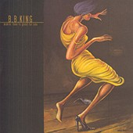
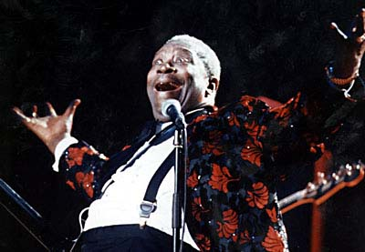
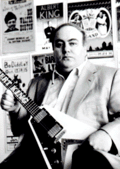
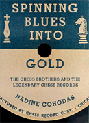

БИ БИ КИНГ в год юбилея

25 апреля состоялся официальный релиз нового альбома БиБиКинга "Заниматься любовью тебе на пользу" (Makin' Love Is Good for You), который в первую же неделю занял #2 в блюзовых чартах журнала "Биллбоард". 74-летний БиБиКинг в прошлом году отпраздновал 50-летие со дня выхода своей первой пластинки. Один из самых активно гастролирующих блюзмэнов
в истории жанра, Кинг не покидает дорогу и в столь солидном возрасте. 15 мая он открывает очередное большое турне концертом в Каламазу, штат Мичиган. Турне продлится 6 месяцев. Среди намеченных мероприятий: участие в мажорном теле-шоу Давида Леттермана; европейские концерты в июле; 1 августа в Лас-Вегасе откроется "Фестиваль БиБиКинга - 2000" (B.B. King Festival 2000), в рамках которого начнется турне с участием Бадди Гая, Сюзан Тадеши и Томми Кастро, которое завершится концертом в Далласе 1 октября.Для новой голливудской "экранизации" мультика про Флинстоунов музыку записали звезды блюза БиБиКинг (B.B. King) и Сьюзан Тадеши (Susan Tedeschi), госпелл-хор преп.Хортона (rev.Horton) и Ник Лоув (Nick Lowe). Поскольку герои фильма - из каменного века, почти все песни на звуковой дорожке фильма содержат в названии слово "rock" - "камень", он же "рок". БиБиКинг исполняет свой знаменитый "Rock Me Baby", а С.Тадеши - "Rock Me Right" и "Rockabilly Boogie". Фильм вышел на экраны 28 апреля 2000г.
Основатель и надежа остинской блюзовой сцены
- под судом
С 1997 года тянется суд на Клиффордом Антоуном, основателем и владельцем клуба Antone's, в котором начинали свой путь многие из нынешних звезд техасского блюза и который в трудные времена предоставлял работу корифеям блюза. Клуб открылся в 1975 году, на его сцену выходили молодые и безызвестные тогда Стиви Рэй Воэн (S.R.Vaughan), "Фабьюлос Сандербердз" (The T-Birds), Лоу Энн Бартон (Lou Ann Barton) и Анжела Стрели (Angela Strehli), а так же уже тогда легендарные Алберт Кинг (Albert King) и Мадди Уотерс (Muddy Waters)... Позже на базе клуба была организована небольшая фирма звукозаписи.
В 1984 году Энтоун отбыл в тюрьме 14 месяцев за хранение наркотиков (1000 фунтов марихуаны). Сейчас его обвиняют в участии в цепи торговцев наркотиками, доставлявших товар из Мексики, и максимально ему грозит 10 лет заключения. До суда он освобожден под залог.
На протяжении многих лет клуб "Энтоунз" был эпицентром остинской и техасской блюзовой сцены. К.Энтоун уверяет, что сделал все, чтобы клуб продолжал функционировать вне зависимости от приговора суда. Благодаря его усилиям, клуб теперь поддерживает ряд сторонних инвесторов. С 1984 года номинальной хозяйкой клуба числится его сестра Сюзан.

На 13 мая назначен Второй ежегодный блюзовый фестиваля Энтоуна в городском парке Ватерлоо (sic! Austin's Waterloo Park). Звезды фестиваля: Сьюзан Тадеши (Susan Tedeschi), Джимми Воэн (Jimmie Vaughan) и Роберт Крэй с группой (Robert Cray Band). Должен был приехать и Джон Ли Хукер (John Lee Hooker), но буквально на днях во время планового врачебного обследования у 82-летнего патриарха блюза были обнаружены серьезные неполадки в здоровье, в результате чего все гастроли, включая большое европейское турне, пришлось отменить. А в июле клуб будет отмечать свой четвертьвековой юбилей и тоже ожидает именитых гостей, большинство из которых - его старые друзья.49-летний К.Энтоун, лауреат The National Blues Foundation's "Lifetime Achievement Award", сейчас не уверен, сможет ли он лично присутствовать на торжествах. "Все будет замечательно,- сказал он. - Когда попадаешь в подобную ситуацию, остается только много молиться. Ты предоставляешь все тому, кто выше этажом, и надеешься на лучшее..."
"It's going to be great.
You just pray a lot when you're in this sort of situation.
You turn it up to the man upstairs and hope for the best."
Книга о Чикагском блюзе и братьях Чесс

"If he didn't understand the music he was hearing... he did understand a few important things. People loved music, and they would spend money for it."
По легенде Леонард Чесс, основатель самой значительной фирмы в истории блюза, не мог понять ни слова, когда впервые услышал пение Мадди Уотерса. "Но даже если он и не понимал т музыку, которую слышал, - пишет Надин Коходас (Nadine Cohodas) в своей новой книге, посвященной фирме "Чесс", - он хорошо понял кое-что очень важное: люди любят эту музыку... И готовы тратить на нее свои деньги."
Исходя из этой предпосылки, свою новую, расхваленную критиками, книгу об истории "Чесс" Н.Коходас и назвала "Spinning Blues Into Gold" ("Обращая блюз в золото", "Выжимая золото из блюза"). Основой фирмы она называет "конвергацию аутсайдеров": еврейские эмигранты из Польши и черные эмигранты с Юга в Чикаго. Ясуф Цыз (Yasef Czyz) привез своих детей Лейба и Фазиля (Lejzor and Fiszel) в новый свет в поисках лучшей жизни, точно как Мадди Уотерс, Уилли Диксон и многие другие южане отправлялись на север, думая найти более терпимое отношение общества и хорошую работу. Ожидания их на быстрые перемены не сбылись. Но успех они все-таки оседлали, продавая черный ритм-энд-блюз с глубокого Юга в упаковке, соответствующей северному городу.
В начале 40х, американизировавшие свои имена и фамилии, "Чесс и сыновья" управляли мусорной свалкой, через улицу от которой была церковь для черных. И часто братья могли слышать громогласное счастливое ритмичное пение "хлопальщиков", как их назвал Фил (бывший Фазиль). Чесам нечего было и соваться в чистый белый бизнес. Когда мусорный бизнес помог скопить требуемую сумму, Леонард (экс-Лейб) купил магазин спиртных напитков с правом на торговлю "у стойки" и установку музыкального автомата. Вскоре это заведение под названием "Мокомбская чайная" (Macomba Lounge) стала одним из излюбленных среди ночных заведения "черного пояса" Чикаго. Завсегдатаи крутились вокруг музыкального ящика, и Леонарду показалось, что репертуар пластинок в нем мог бы быть и побогаче, чем давал возможность пластиночный каталог. Он сам видел, если и "не слышал, какая именно музыка пользовалась наибольшим спросом, и спрос этот явно требовал большего.
Это сподвигло Леонарда, который был главным генератором идей в деловом партнерстве с братом, организовать собственную фирму грамзаписи и уйти в шоу-бизнес. Он понимал, что записать и выпустить пластинку мало. Ее надо "продвигать". И он занимался концертами артистов, дистрибуцией и рекламой пластинок. Это не было благородным бизнесом. В 50-х и 60-х "Чесс", среди многих других фирм грамзаписи, оказались вовлечены в скандал о взятках ди-джеям. По его инициативе самый влиятельный американский ди-джей того времени Алан Фрид оказался в соавторах песни "Мейбеллин", о чем ее единственный автор Чак Берри (Chuck Berry) узнал, когда пластинка уже вышла. Далеко не единственное жульничество Леонарда, но ничего исключительного в этом поступке не было. Радио-ди-джеев поменьше рангом подкупали бутылками, наличными или начинающими артистками. Тех, что покруче, "брали в долю" - лишь бы раскрутить "хит". Леонард всего лишь использовал обычные приемы для продвижения черный музыки, как рок-н-ролла, эстрадного ритм-энд-блюза, так и собственно блюза.
 "Когда Леонард совершал свои сделки на пользу дела, он не собирался ставить в известность тех, кого это больше всего могло задеть - самих артистов, о том, что он делает. В этом была и отеческая защита, и одновременно - обычный обман. Но ни то, ни другое не было для Леонарда намеренным", - пишет Коходас. Ее книгу особенно хвалят за то, что автор не идет на поводу у стереотипов. Она подчеркивает заслуги, не забывая сказать о недостатках. Каталог "Чесс" содержит половину общепризнанных шедевров жанра. Но авторы их получали у "Чесс" гроши, и, когда настали другие времена, потребовали через суд недоплаченные авторские гонорары. Очень важно, что все поступки и события даются в антураже их времени. Это история изгнания, удачи и гешефта, история эмигрантов, ухвативших свой кусок американского пирога. И она же - история бурного рождения рок-н-ролла. И главный герой книги о фирме "Чесс" - музыка блюза, простая и чудесная. Она повествует о тех артистах, кто поднял ее из кабаков южных кварталов Чикаго до всемирной славы.
"Когда Леонард совершал свои сделки на пользу дела, он не собирался ставить в известность тех, кого это больше всего могло задеть - самих артистов, о том, что он делает. В этом была и отеческая защита, и одновременно - обычный обман. Но ни то, ни другое не было для Леонарда намеренным", - пишет Коходас. Ее книгу особенно хвалят за то, что автор не идет на поводу у стереотипов. Она подчеркивает заслуги, не забывая сказать о недостатках. Каталог "Чесс" содержит половину общепризнанных шедевров жанра. Но авторы их получали у "Чесс" гроши, и, когда настали другие времена, потребовали через суд недоплаченные авторские гонорары. Очень важно, что все поступки и события даются в антураже их времени. Это история изгнания, удачи и гешефта, история эмигрантов, ухвативших свой кусок американского пирога. И она же - история бурного рождения рок-н-ролла. И главный герой книги о фирме "Чесс" - музыка блюза, простая и чудесная. Она повествует о тех артистах, кто поднял ее из кабаков южных кварталов Чикаго до всемирной славы.
Изложено по статье Renee Graham.